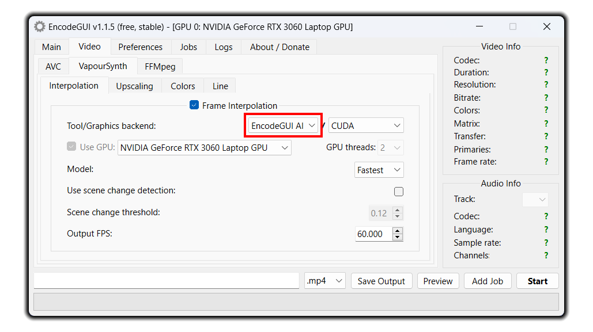
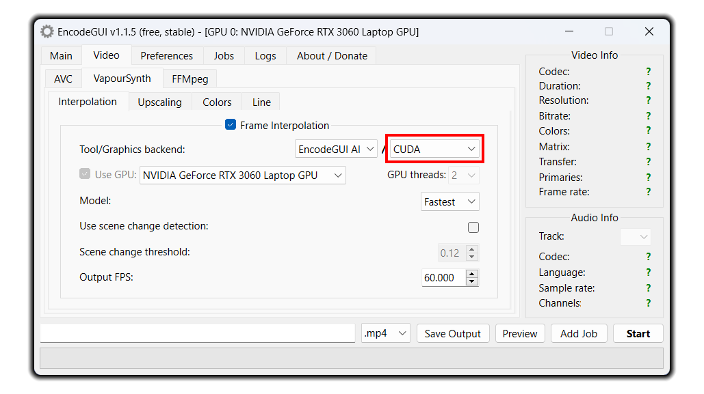
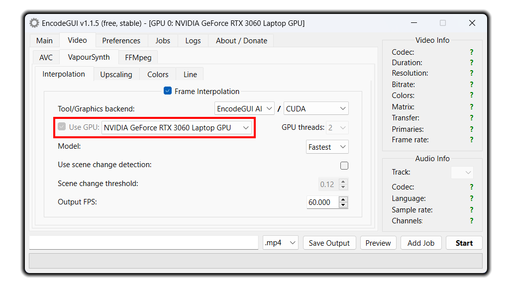
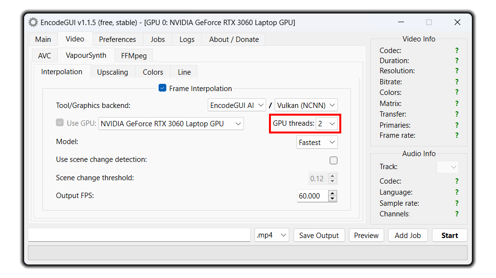
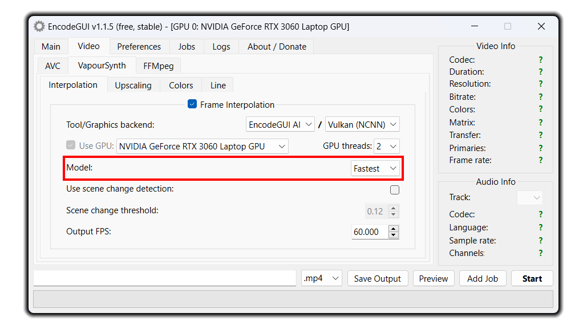
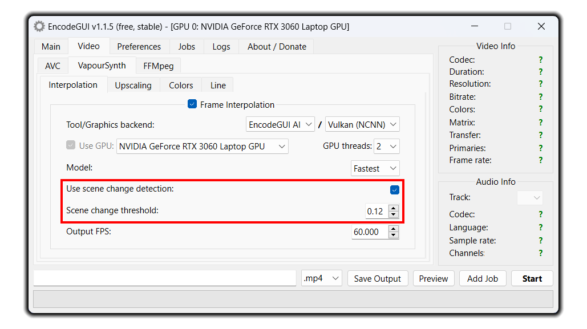
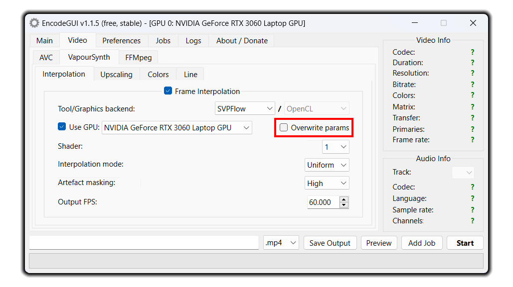
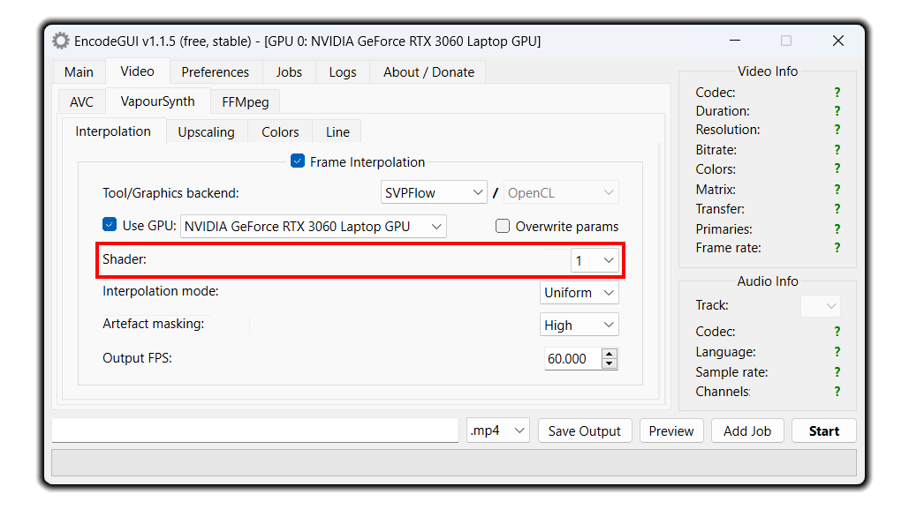
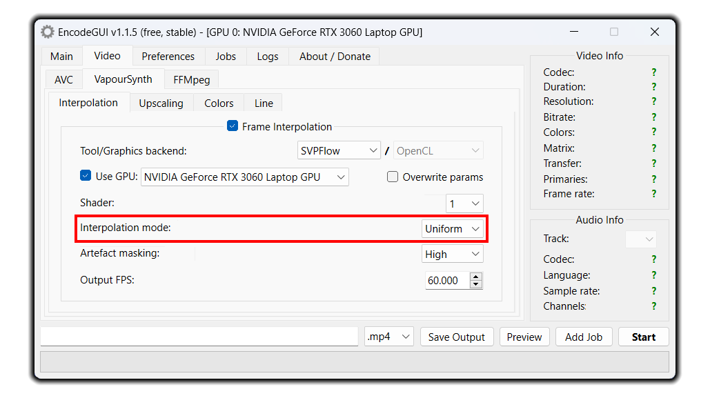
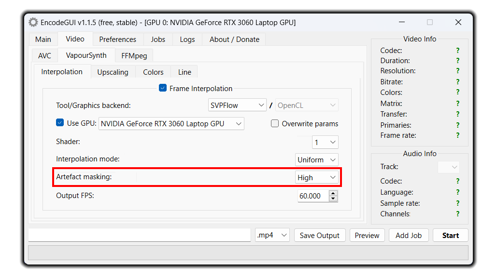

Frame Interpolation
Video frame interpolation is supported through RIFE (CUDA / NCNN), SVPFlow (OpenCL), and an exclusive method called EncodeGUI AI (CUDA / NCNN). It is recommended that ALL users use EncodeGUI AI because it consists of the most features and has the best interpolation quality. In order to use all of the interpolation filters effectively (~5fps encoding speed w/ 720p video), your system must meet or exceed the specifications stated below:
| CPU | GPU | Storage Type | RAM |
|---|---|---|---|
| Intel: i3-4790 AMD: 2500X |
Nvidia: GT 1030 AMD: RX 590 Intel: Xe Graphics |
SSD | 8GB |
How to Use
Selecting a Tool

As mentioned previously, this is the recommended frame interpolation method to use. It combines SVPFlow and RIFE to allow non-integral interpolation multiplication factors (such as 24fps -> 60fps) while still using the high quality AI interpolation. The frame rendering speed in EncodeGUI AI can be up to 20% faster than the RIFE counterpart.
RIFE:
It's the next best alternative to EncodeGUI AI. RIFE is also AI-based and is known as one of the best AI interpolation tools due to it's speed and high quality interpolation method. While RIFE can support non-integral interpolation, it is not as good as EncodeGUI AI at times.
SVPFlow:
This interpolation tool is based off the popular SVP interpolation app. SVPFlow is common as it is a very fast interpolation tool and is decent quality. However, the interpolation quality using SVPFlow isn't near as good as EncodeGUI AI or RIFE. It is only ideal to use SVPFlow if you have a low specification computer.
Selecting a Graphics Backend

CUDA:
This is the recommended backend to use. The CUDA backend is supported on both EncodeGUI AI and RIFE. CUDA is only supported on modern Nvidia GPUs and it is highly recommended that you use an Nvidia RTX GPU as the Tensor AI cores can be taken advantage of for faster interpolation.
Vulkan (NCNN):
This backend is the next best option to use, especially if you don't have an Nvidia GPU or your GPU doesn't support modern revisions of CUDA. In order to use this tool, your GPU must support the Vulkan graphics API. NCNN is supported for both EncodeGUI AI and RIFE. It can be twice as slow as the CUDA counterpart but can allow a higher quality interpolation on the basis of what AI model you select.
Note: Please refrain from asking the developer which graphics backend you should use or if your GPU supports X backend. We don't know as every GPU is different and everyone's needs are also different. Please research any questions you have regarding your GPU for answers first before seeking help from the EncodeGUI developer.
Selecting a GPU Device

Selecting GPU Thread Count (NCNN Only)

2 threads. More threads may not make the process faster and can throw errors if too many threads are being used.Selecting an AI Model

Fastest (EncodeGUI AI): As the name says, this is the fastest model for interpolation but may not be the highest quality as the
Slow model.Fast (EncodeGUI AI): This model is almost like a combination of the
Fastest and Slow models. It is nearly as fast as the Fastest model, but can have less noticeable artefacts at times.Slow (EncodeGUI AI): This model is, well, slow. However, it produces the least amount of artefacts than any other model in EncodeGUI AI. Use this model if your video has a lot of patterns - there are little to no pattern artefacts when using this model.
v4.6 (RIFE): This model is extreamly fast and is also very high quality. Use this model for most videos. However, it will still suffer from pattern artefacts.
v4.0 (RIFE): Very similar to model
v4.6 but not as fast.v3.1 (RIFE): This model is fast and decent in terms of quality. However, there are better options for quality. Only use this model if the other models give you problems.
v2.4 (RIFE): This model is also fast but has much better artefact control than model
v3.1. This is the recommended option for its balance between speed and interpolation quality.v2.3 (RIFE): This model is regarded as the best for low artefacting, while still maintaining a smooth video.
v1.8 (RIFE): This model is the slowest out of the total RIFE models, but is the highest quality giving the least amount of artefacting.
Using Scene Change Detection

0.14 or 0.15 for videos with a lot of motion or moving objects. Also be aware that increasing the scene change threshold value will make the encoder less aware of actual scene changes which could lead to more scene change artefacts.Overriding Parameters (SVPFlow Only)

Shader (SVPFlow Only)

13 as it provides the best balance between halos, artefacts, and smoothness. See the SVPFlow documentation here for more details.Interpolation Mode (SVPFlow Only)

Uniform and for the best balance of artefacts to smoothness, select Auto. Once again, you'll want to see the SVPFlow documentation here for more details on the options.Artefact Masking (SVPFlow Only)

Off for the most smoothness and artefacts, and select High for the least smoothness but also the least artefacts.Selecting the Output FPS

For EncodeGUI AI, the output FPS must be between
1.25x and 10x the source FPS, with a maximum cap at 800fps. RIFE uses a multiplier to specify the output FPS. This value can be anywhere between
2x and 10x the source FPS (RIFE NCNN is locked at 2x), with a maximum cap at 800fps. SVPFlow is different, where you can either downsample or upsample the output FPS to any frame rate between 5fps and 800fps.